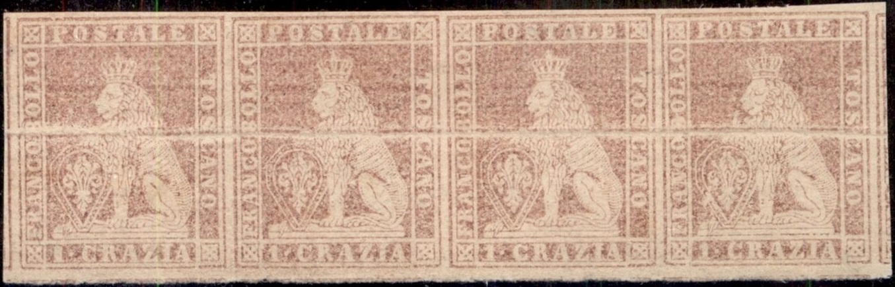
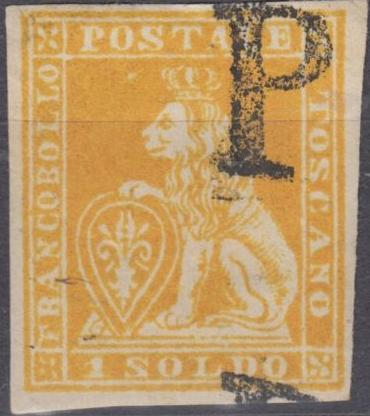
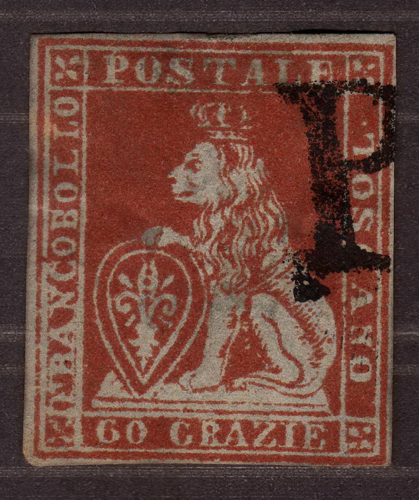
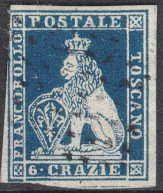
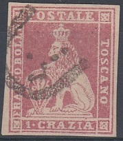
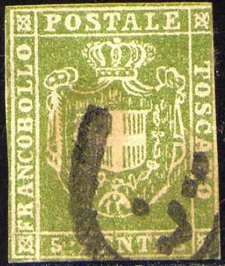
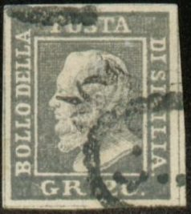
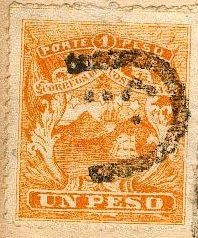

Very primitive forgeries of the 1 g, 2 g, 6 g and 9 g values with inscription "GRAZIA" and "GRAZIE" instead of "CRAZIA" and "CRAZIE"
Toscana - Toscane - Toskana
Return To Catalogue - Tuscany 1851 issue, forgeries, part 2 - Tuscany 1851 issue, forgeries, part 3 - Tuscany 1851 issue, forgeries, part 4 - Tuscany Fournier forgeries - Tuscany 1851 issue, more Fournier forgeries - Tuscany 1851, Oneglia(?) forgeries - Tuscany 1851 issue - Tuscany 1860 issue and miscellaneous - Italy
Note: on my website many of the
pictures can not be seen! They are of course present in the
catalogue;
contact me if you want to purchase the catalogue.
Album Weeds gives already 13 (!) forgeries for this issue. The genuine stamps have watermarks (though some forgeries have also a watermark) and were printed on rough handmade paper. Some of these forgeries are very deceptive. The genuine stamps have a small cross on top of the crown. However, this is often hardly visible and will become a spike. The cross should be under the left hand side of the vertical stroke of the "T" of "POSTALE". If the cross is clearly visible, then the stamp is 'suspect'.

I've seen whole sheets of stamps, badly printed with no
watermark, which are said to be reprints. These 'reprints' are
not very common.
Very primitive forgeries of the 1 g, 2 g, 6 g and 9 g values with
inscription "GRAZIA" and "GRAZIE" instead of
"CRAZIA" and "CRAZIE"


1 s forgery with "PD" cancel and 2 s forgery brown(?).
Note the typical 'Spiro' cancel on one of the 2 Soldi forgeries.


'Misprint'(?) "1 SOLDI" instead of "1 SOLDO"
and 2 s made by the same forger. Also pasted on a piece of paper
with a forged cancel "22 APR 1853 FIRENZE" and even an
expert signature to make it more convincing.



Forgeries of the 60 cr value.
(Front and backside of a 60 crazie forgery)


Here a 2 Soldi forgery with a Papal State grill cancel.
The above forgery type has no spike on top of the crown. The face of the lion looks more like a bear. The foot of the lion is very poorly done. The inscriptions are also very poor (for example the 'S' of 'POSTALE'). The ornaments in the corners consist of just four small leaves. The bottom line has no breaks in it, instead it is continuous. In spite of its primitive appearance, I have seen this stamp been offered as genuine on a E-bay auction in 2003 and it was sold for $US710 (!). This forgery is also described in Album Weeds (first forgery). I have seen the 60 c value with a cancel consisting of parallel lines forming an ellipse.
Another forgery with the cross on the crown exactly below the center of the "T" of "POSTALE". The face looks more like a monkey than a lion. I think this is the second forgery described in Album Weeds. The foot on the shield is very poorly done. Also note that the lettering is different from the genuine stamps (for example the "S" of "POSTALE"). It exists with a range of bogus cancels. There are guidelines between the stamps.


I have seen the same forgery (value 6 crazie) with cancel "PD":




I presume the above forgeries are the fifth forgery described in Album Weeds. The cross is located exactly under the "T" in this stamp. The crosses in the corners are also not as in the genuine stamps. The easiest test is the fourth toe on the front leg of the lion, it is backward pointing in this forgery (in the genuine stamps it is not). Also note the flattened face of the lion.


Forgeries with the crown slanting backwards, less shading on the
hindleg of the lion and very prounounced cheek.
Tuscany 1851 issue,
forgeries, part 2
Tuscany 1851 issue, forgeries, part 3
Tuscany 1851 issue, forgeries, part 4
Tuscany 1851 issue, forgeries, Fournier
forgeries
Tuscany 1851 issue, forgeries, more
Fournier forgeries
Tuscany 1851, Oneglia(?) forgeries


{kind=link}
{kind=link}
{kind=link}
{kind=link}
{kind=link}